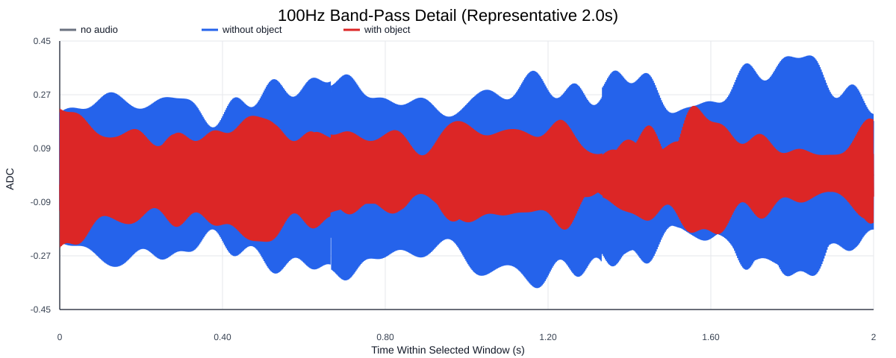
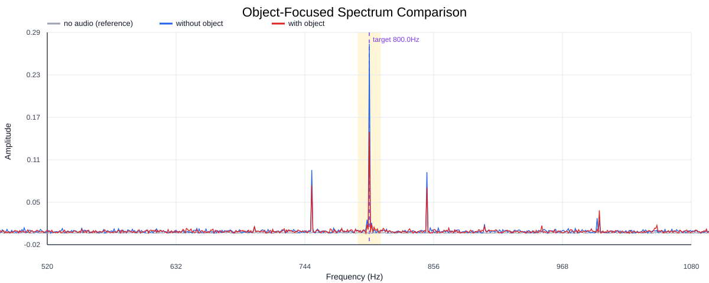
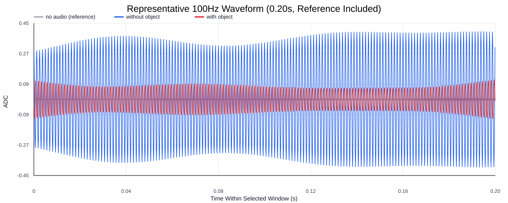
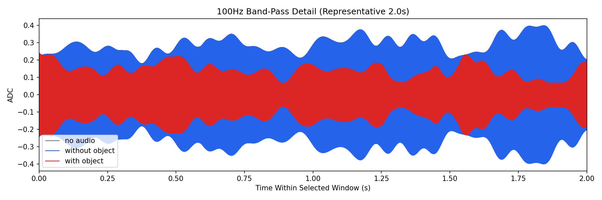
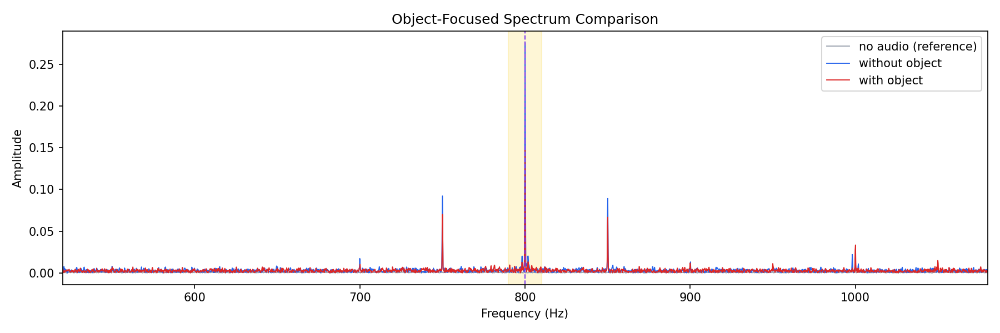
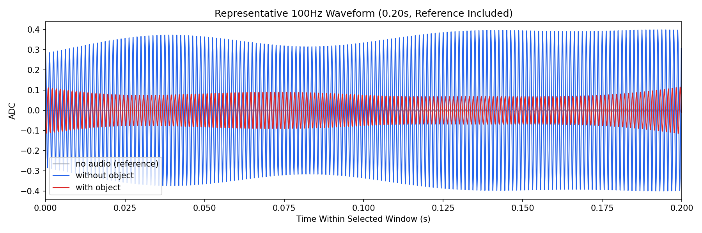

Background: F:\项目类文件夹\异物检测4.10\Data_Dual\frequency_sweep\0800Hz\repeat_03\raw\no_audio.csv
Without object: F:\项目类文件夹\异物检测4.10\Data_Dual\frequency_sweep\0800Hz\repeat_03\raw\without_object.csv
With object: F:\项目类文件夹\异物检测4.10\Data_Dual\frequency_sweep\0800Hz\repeat_03\raw\with_object.csv
| Metric | 无音频 | 100Hz无异物 | 100Hz有异物 | 无异物/无音频 | 有异物/无异物 | 有异物/无音频 |
|---|---|---|---|---|---|---|
| centered_rms | 0.055843 | 0.372573 | 0.301170 | 6.6718 | 0.8084 | 5.3931 |
| raw_target_amp | 0.000873 | 0.276014 | 0.147264 | 316.0882 | 0.5335 | 168.6453 |
| filtered_rms | 0.004181 | 0.198078 | 0.103234 | 47.3782 | 0.5212 | 24.6925 |
| filtered_target_amp | 0.000873 | 0.276014 | 0.147264 | 316.0882 | 0.5335 | 168.6453 |
| filtered_energy_ratio | 0.005605 | 0.282650 | 0.117495 | 50.4285 | 0.4157 | 20.9627 |
| window_filtered_target_amp_mean | 0.004374 | 0.275554 | 0.140157 | 62.9962 | 0.5086 | 32.0421 |
| window_filtered_target_amp_std | 0.003566 | 0.048303 | 0.039298 | 13.5445 | 0.8136 | 11.0193 |





